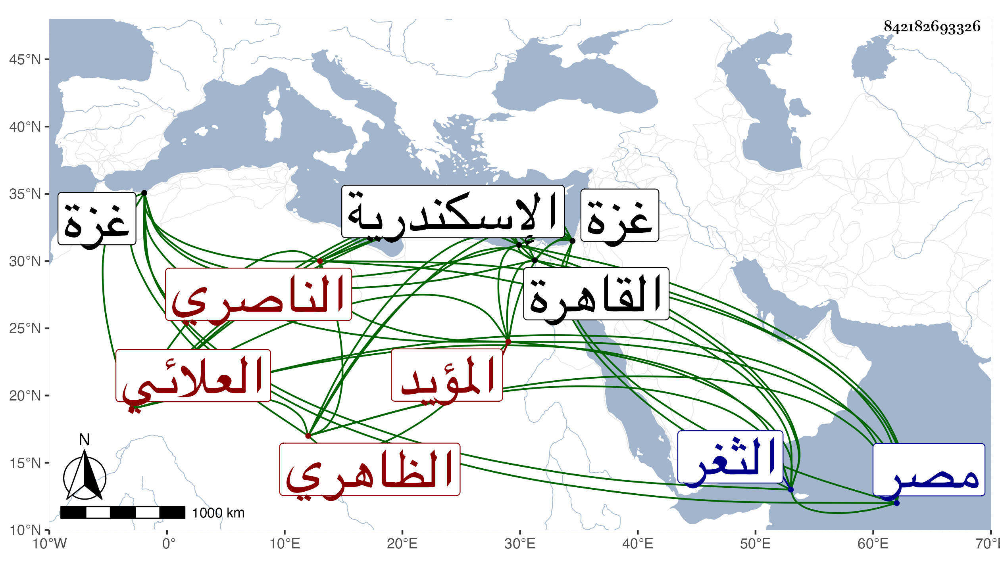

0902Sakhawi.DawLamic.ITO20230111-ara1.EIS1600.842182693326
Biography ID: 842182693326
أحمد بن اينال المؤيد الشهاب أبو الفتح بن الأشرف أبي النصر العلائي الظاهري ثم الناصري من ذرية الظاهر بيبرس فأمه ابنة ابن خاص بك . ولد في سنة خمس وثلاثين وثمانمائة بغزة حين كان أبوه بها وهو أمير عشرين ونشأ فقرأ عند العلاء الغزي وغيره وترقى في أيام أبيه وكانت حجته هائلة تضرب بها الأمثال ثم استقر في المملكة بعده في يوم الأربعاء رابع عشر جمادى الأولى سنة خمس وستين بعهد منه له ودام إلى يوم الأحد تاسع عشر رمضان منها وأرسل به إلى الثغر السكندري في البحر وتألم الناس لذلك سيما قاضي الحنابلة بالعز الكناني ولم يتحاش عن التظاهر بذلك فإنه كان قد أحسن السيرة في تلك الأيام وانكف المماليك به عن تلك البليات العظام واتفقت القلوب على حبه وخضع الأمراء فمن دونهم له وتفاءلوا بالعدل والخير في سلطنته هذا مع تلفته في غالب أيام أمرته إلى العلماء وإكرامه لهم وتفقدهم وميله لرقائق الأشعار ورقة طباعه وحسن عشرته ومزيد عقله وخبرته بالأمور وبعد إرساله لم يلبث أن كسر قيده بل قدم الديار المصرية بعد وفاة أمه وتزوج الدوادار الكبير عظيم المملكة ابنته واستقر حين كونه بالاسكندرية في ذي الحجة سنة ست وثمانين في مشيخة الشاذلية وكان يلقنهم الذكر ويحضر مجالسهم ومن يتوجه معه إلى بيته من جماعة الشاذلية يكرمهم بالإطعام ونحوه ولا يوجه له وهو هناك لقضاء حاجة من يقصده إلا بغرض . مات في منتصف صفر سنة ثلاث وتسعين وجيء بجثته إلى القاهرة فدفن عند أبيه رحمه الله وإيانا .
